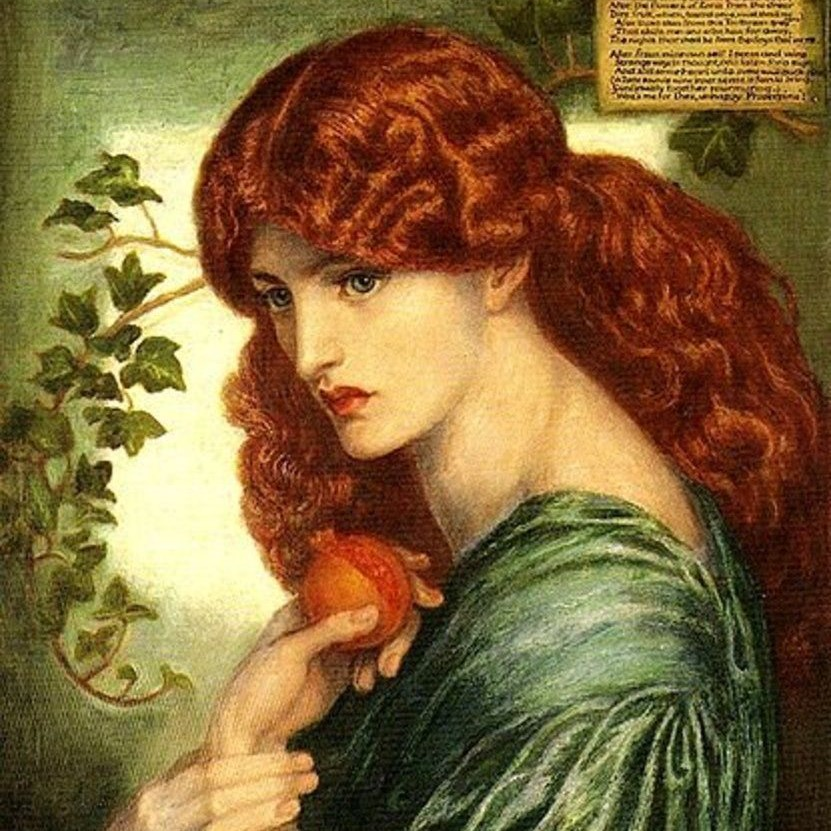

Plutão é 9° maior corpo-celeste em orbita ao Sol, era considerado o 9° planeta do sistema solar e é o mais distante do Sol, passou a ser classificado como planeta anão em 2006 quando a União Astronômica Internacional (UAI) criou uma definição formal do termo "planeta".
Plutão foi descoberto em 1930 e por ser, o então planeta, mais distante do Sol foi batizado com o nome do deus romano considerado o mais obscuro, o equivalente a Hades na mitologia grega, o deus do sub-mundo. O planeta anão possui 5 luas: Caronte, Hidra, Nix, Cérbero e Estinge, sua superfície tem 98% de gelo de nitrogênio em sua composição, com resquícios de metano e monóxido de carbono.
O nome de suas luas também fazem referência à mitologia: Caronte faz referencia ao barqueiro das almas, Hidra ao monstro com corpo de dragão e várias cabeças de serpente, Nix à deusa que é a personificação da noite, Cérbero ao cachorro de três cabeças e Estinge ao rio das almas.
Um dia plutoniano demora 153 horas terrestres (cerca de 6 dias) e acontece por meio do movimento de rotação. Já um ano plutoniano corresponde a 248 anos terrestres. Isso corresponde ao tempo que ele leva para completar uma volta em torno do Sol através do movimento de translação.
Vale notar que a rotação de Plutão é retrógrada, girando de leste a oeste, como ocorre com Urano e Vênus.
O planeta tem semelhanças a um cometa porque sua atmosfera, descoberta em 1988, é frágil e se expande quando está mais próximo ao Sol. Ao mesmo tempo, ele executa o movimento inverso quando está distante, contraindo-se.
Plutão é constituído por um núcleo rochoso sobre um manto de gelo e metano congelados. A temperatura estimada é de 220 ºC negativos e, por isso, é conhecido também como Anão Gelado.
Ele está localizado numa zona do espaço denominada Cinturão de Kuiper. O local é preenchido por milhares de corpos celestes congelados em miniatura e denominados de "objetos transnetunianos".
Ali, ele chega a cruzar com Netuno na órbita em torno do Sol. A sua órbita é bastante elíptica e chega a aproximar-se do Sol mais que Netuno. Quando está próximo ao Sol, a superfície gelada derrete temporariamente.
Embora cientistas acreditem na existência um oceano escondido sob a superfície de Plutão, a vida como a conhecemos não seria suportada no planeta.
Hades, conhecido como o deus do submundo, o lugar para onde vão as almas dos mortos, era irmão de Héstia, Deméter, Hera, Poseidon e Zeus, e tomou parte na rebelião contra Cronos, seu pai (o titã que devorava seus filhos). Sua mãe era Réia. Ele era o único que não morava no Monte Olimpo, uma vez que residia em um palácio debaixo da Terra.
O submundo era protegido por seu cachorro de três cabeças, Cérbero. Lá, as almas dos mortos eram julgadas de acordo com suas ações em vida, e aqueles que tiveram boas ações teriam acesso aos Campos Elísios, um lugar de descanso seu interior. Aqueles que tivessem uma vida de más ações seriam enviados para o Tártaro, onde o sofrimento seria eterno. Aqueles que estavam à espera de julgamento, receberiam-no em Érebo.
O fato de residir no submundo criou um grande temor dos gregos quanto a Hades,
e até a pronúncia de seu nome era evitada. Ainda assim, eram praticadas oferendas
em homenagem ao deus, sendo que, tanto na Grécia quanto em Roma, animais costumavam
ser sacrificados. Não existem evidências de que sacrifícios humanos aconteciam.
Na Grécia existiam templos para prestar culto a Hades.
O deus do submundo era conhecido por utilizar um elmo, confeccionado por Hefesto,
que lhe dava o poder da invisibilidade.
Durante os períodos Arcaico e Clássico da história grega, o deus do submundo era representado como um homem barbudo com um cetro na mão. Hades era visto como um deus insensível, impiedoso e repugnante.
As almas chegavam ao submundo dominado por Hades por meio de Hermes, que as guiava até o rio Estige. Lá o barqueiro Caronte fazia a travessia das almas pelos rios Estige e Aqueronte até os portões do submundo. O barqueiro só fazia a travessia daqueles que recebessem os devidos ritos funerários, o que incluía a colocação de uma moeda (na boca dos mortos) para pagar pela viagem.
Perséfone era filha de Zeus com Deméter (deusa da agricultura). Como era muito bela, Perséfone chamou a atenção de muitos deuses. Virgem e protegida por sua mãe, ela foi raptada por Hades, enquanto colhia narcisos.
A partir desse momento, os alimentos e os campos foram atingidos pela tristeza de Deméter. Receosos das consequências que isso poderia acarretar, os deuses logo interviram para encontrar sua filha.
Ao revelarem onde estava Perséfone, Deméter foi pedir a ajuda de Zeus. No entanto, Hades não permitiu o retorno de Perséfone. O deus do submundo ludibriou a deusa e fez com que ela comesse o fruto que selaria o casamento, a romã. Mas, foi feito um acordo: Perséfone ficaria no Olimpo metade do ano e na outra metade passaria ao lado de seu Marido. Perséfone torna-se a deusa do sub-mundo.
Esse mito era usado para explicar as estações do ano, pois ao se aproximar da época em que Perséfone voltaria ao sub-mundo, o coração de sua mãe ia se tornando triste, até que chegasse o inverno, mas ao aproximar-se da época em que ela iria ao Olimpo, o coração de Deméter ia se aquecendo, até chegar o verão.
Há versões do mito onde Perséfone está ao lado de Hades por vontade própria,
mas na Grécia antiga a vontade feminina não era muito relevante, então não dá
pra saber como eles interpretavam, de fato, essa estória de amor esse mito.